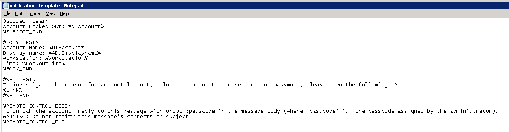

Account Lockout Examiner is able to send notificaton if a lockout occurs. There is an option
to edit the notification text or title by modifying the notification template. The template
file notification_template.txt is stored in the product installation
folder, the default path:
C:Program Files (x86)NetWrix Account Lockout Examiner. Notification
template cosists of 4 sections:

- the SUBJECT section contains the text reflected in the message subject
- the BODY, WEB and REMOTE_CONTROL sections contain the text reflected in the message body
- the BODY section contains the main text of the notification
- the WEB section contains a link to the Help-Desk portal and related text, and is show only if a Link is enabled in Account Lockout Examiner settings.
- the REMOTE_CONTROL section contains a text providing Remote control instructions, and is show only if Remote control is enabled in Account Lockout Examiner settings
- Edit any text within the template sections.
- Add any AD attribute name. The attribute name should be in the following format %AD.[attribute]%. For example with the %AD.Displayname% attribute added into the template, the notification message will show the Display name of the locked out user account.
- Add any internal variable name: %NTAccount% - shows the name of the locked out account. %WorkStation% - shows the name of the workstation where an account was locked out. %LockoutTime% - shows the lockout time. %Link% - shows the link to the web portal.